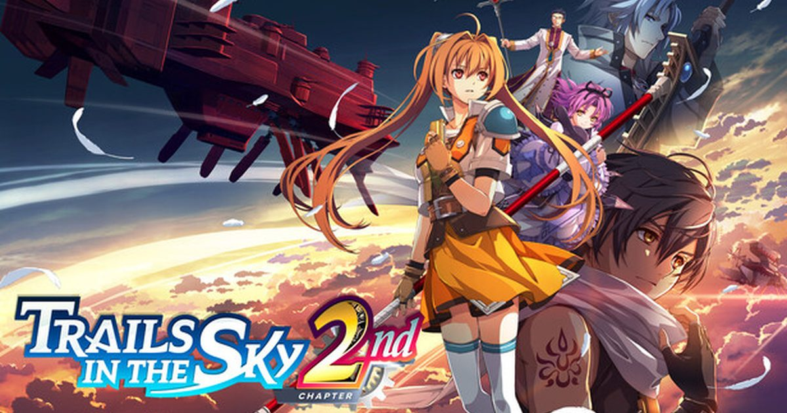

2026-09-18 · 单机深读
9 月 17 日，Falcom 把《Trails in the Sky 2nd Chapter》推上了 PS5、PC 与 Switch 2。这本是 2007 年 PSP 上一款老 RPG 的重制第二弹——按理说，这种"圈地自萌"的硬核 JRPG，最不该在今年和一堆 3A 抢头条。但发售当天，它在 Metacritic 上把《Forza Horizon 6》《Resident Evil Requiem》《Pokémon Pokopia》全压在了身下：PC 版 93、PS5 版 92，暂列 2026 年全球新作评分第一。这事儿本身，比任何宣发词都有说服力。

先说清楚这不是什么"营销号震惊体"。Metacritic 的数据是硬的：PC 版基于 10 篇评测拿 93，PS5 版基于 13 篇拿 92，汇总全平台的 OpenCritic 给 92。在它前面排着的是一众被宣发砸穿预算的大作——结果一个 20 年前的老 IP 重制，把年度评分第一的椅子坐得稳稳的。PS Store 上的玩家分更狠：4.85 / 5，近千票，几乎没差评。
更反直觉的是，它赢的不是"情怀分"。DualShockers 直接给 100，PlayStation Universe 和 Game Informer 各 95，Push Square、INVEN 90，连相对保守的 Worth Playing、CGMagazine 也给了 85。也就是说，无论是系列老粉还是硬核媒体，都不约而同地点了头。一款"重制"，打出这个弧线，值得拆开看看到底发生了什么。
① 分数是真的夸张，但样本还在长。 PC 93 / 10 评、PS5 92 / 13 评，OpenCritic 92——这些是"开分"而不是"终分"。随着更多媒体在发售后补评，数字会动。但开局站位已经足够说明问题：它不是靠几篇水系稿子堆出来的，而是从 DualShockers 到 Game Informer 这种挑刺型媒体一致给高。
② 它确实在"重制"而不是"搬运"。 2025 年的《1st Chapter》重制先打好了底，2nd 接着来：补了大量新过场与全语音，战斗更利落（Brave Rush / 无缝衔接的爽点被放大），还把前作里被人念叨的"慢热铺垫"段落砍掉了一截。DualShockers 的原话是"flawless execution, a fitting conclusion to the Bracer duo's story"——一个重制版能拿到"完美执行"这种词，在 JRPG 圈子里相当罕见。
③ 平台差为什么能差出近 10 分。 注意 Switch 2 版只有 84（且样本更少），和后两平台差了快 10 分。这不是游戏内容问题，基本是移植 / 帧数层面的硬伤——掌机模式的画质与稳定性拖了后腿。所以同一个游戏，买哪个平台，体验是分层的。
④ 免费试玩版还开着。 PS Store 上的 demo 紧接《1st Chapter》结局，没玩过前作的可以先从这里验货。等于 Falcom 把"要不要花这几十刀"的赌，变成了"先打一段再说"的零成本试用。
和 2026 其他大作比：它赢在"积累"。 Trails 系列从来不靠某一个闪瞎眼的大招吃饭，它靠人物长线、政治暗线、战斗规划、以及"看似无关的细节三年后回收"的执念。20 年攒下的那个世界，在 2nd Chapter 这一刻集中兑现——Estelle 寻回 Joshua、对抗 Ouroboros 结社的收束感，是只有老粉才懂、新粉也能被拖进去的叙事引力。
和 1st Chapter 比：2nd 是"更好的一半"。 媒体普遍认为 2nd 在 1st 的基础上"improves upon it"，节奏更紧、收束更狠，被 Game Informer 称为"the Trails series' defining entry"。换句话说，重制计划走到第二棒，反而跑出了系列最佳。
隐忧也在。 回合制 JRPG 天然小众，新玩家面对"要先懂 Liberl 王国政治"的门槛还是会劝退；而 Falcom 社长说"希望继续推进重制一阵子"，但每一部的工程量都不是小数。2nd 封神，是把续作的压力也一并叠加上去了。
我们的评分：9.0 / 10。 加分给"年度黑马"的含金量、对慢热段落的手术刀式精简、以及 free demo 的诚意；扣分只给两点——Switch 2 移植的明显短板，和它对纯新人的入坑门槛。它大概率不是 2026 年"最强"的游戏，但大概率是今年"最让人服气"的那个。
我们的观察： Falcom 正在用重制，把"硬核 JRPG 的圈地"变成"大众可入口"。比起从零做一个新 IP 赌市场，把被时代耽误的老经典用今天的工艺重讲一遍，是一条更稳、也更体面的路。
我们的观点： 别叫它"炒冷饭"。冷饭是同一锅 reheated；它是把一段被 20 年时光冲淡的叙事，重新端上桌，而且摆盘、火候、味道都比原版更好。区别在于：你是为了"补完一段传奇"而玩，还是为了"跟风年度第一"而买——前者会满意，后者可能觉得"也就那样"。
我们的案例 / 对比： 和原版 PSP（画面 / 节奏 / 配音全面代差）、1st Chapter（2nd 是收束与升华而非重复）、其他 2026 大作（它靠"好"不是靠"大"）放一起看，2nd Chapter 的护城河只有一条——"把一款好 RPG 讲到最完整的那一下"。如果你听到这句会心动，它就是给你做的。
我们的实验（给不同玩家的行动清单）： ① 完全没接触过 → 先下免费 demo 验货，再决定买不买；② 只在 Switch 2 → 别首发，等移植补丁或打折，84 分的体验不值原价；③ PS5 / PC → 直接冲，这是体验最完整的版本；④ 老粉但 1st 没玩 → 先补 1st，2nd 的收束感建立在 1st 之上；⑤ 嫌慢热 → 2nd 比 1st 节奏更紧，可以从 2nd 入，再回头补前作。
一款 2007 年的 PSP 游戏，在 2026 年成了 Metacritic 年度评分第一——这不是怀旧赢了，是"把一件事做到位"赢了。对 8bitACG 的读者来说，它最划算的打开方式不是纠结"是不是炒作"，而是：打开那个免费的试玩版，先陪 Estelle 把 Joshua 找回来，再决定要不要把这条路走完。
资讯来源：Metacritic / OpenCritic 评分页、PlayStation LifeStyle、DualShockers、Game Informer、Falcom 官方公告与 PS Store 商店页。本站为导航聚合站，外链均指向官方 / 平台站点，内容仅供交流学习。